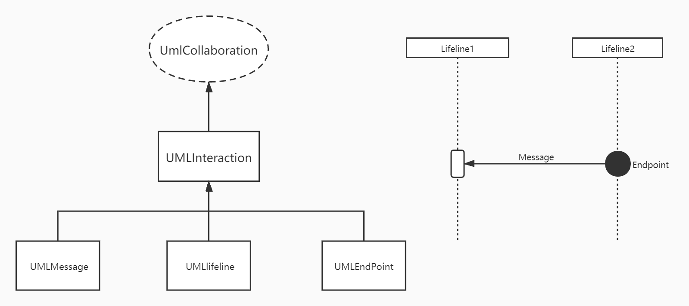
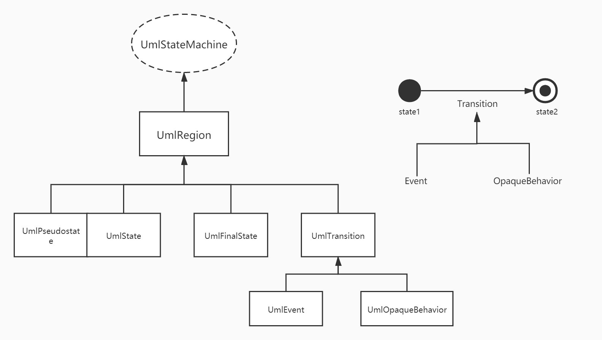

面向对象设计与构造第四单元第二次作业
UML 解析
题目
分析
本次作业需要实现的是在第一次作业
UML解析器上进行增量开发，新增了两种图：顺序图和状态图，并新增了多个不同的对这两类图的信息进行查询的指令处理新增两种图与第一次作业大同小异，在第一次作业的架构之下进行增量开发即可
基本思路
本次作业新增的两个图同样适用于上一次作业使用的层次化处理，采用的数据结构也不变
顺序图和状态图的关系图如下


顺序图：
第一轮处理：
UML_COLLABORATION第二轮处理：
UML_INTERACTION、UML_ATTRIBUTE第三轮处理：
UML_LIFELINE、UML_ENDPOINT第四轮处理：
UML_LIFELINE、UML_ENDPOINT状态图：
第一轮处理：
UML_STATE_MACHINE第二轮处理：
UML_REGION第三轮处理：
UML_STATE、UML_PSEUDOSTATE、UML_FINAL_STATE第四轮处理：
UML_TRANSITION第五轮处理：
UML_EVENT、UML_OPAQUE_BEHAVIOR
具体实现
总UML类图：

修改：
解析处理类
MyParser- 在此类完成顺序图四个层次以及状态图五个层次的建模，并且完成题目要求实现的接口的具体算法实现，并且提供检查是否应该抛出异常的函数
- 在此类完成顺序图四个层次以及状态图五个层次的建模，并且完成题目要求实现的接口的具体算法实现，并且提供检查是否应该抛出异常的函数
属性类
MyAttribute- 注意该类的
parentId可以是类图的MyClass 、 MyInterface也可以是顺序图的MyCollaboration，要据此划分为不同图中的元素
- 注意该类的
新增：
顺序图第一层元素
MyCollaboration- 存储该类拥有的
MyInteraction和MyAttribute，并配置了访问方法
- 存储该类拥有的
顺序图第二层元素
MyInteraction、MyAttributeMyInteraction：存储该类拥有的MyInteraction和MyAttribute，并配置了访问方法MyInteraction：存储对应的visibility属性并配置访问方法MyAttribute：存储对应的visibility、type、referenceId、typeName属性并配置访问方法
顺序图第三层元素
MyLifeline、MyEndPointMyLifeline：存储对应的represent、isMultiInstance属性并配置访问方法MyLifeline：使用ArrayList<String>存储收到的所有消息发送者，存储发出的所有信息接受者MyLifeline：使用ArrayList<MyMessage>存储收到的所有消息，存储发出的所有信息MyEndPoint：存储对应的visibility属性并配置访问方法MyEndPoint：使用ArrayList<String>存储收到的所有消息发送者，存储发出的所有信息接受者MyEndPoint：使用ArrayList<MyMessage>存储收到的所有消息，存储发出的所有信息
顺序图第四层元素
MyMessage- 存储对应的
messageSort、visibility、sourse、target属性并配置访问方法
- 存储对应的
状态图第一层元素
MyStateMachine- 存储该类拥有的
MyRegion，并配置了访问方法
- 存储该类拥有的
状态图第二层元素
MyRegion- 存储该类拥有的
MyPseudostate，MyState，MyFinalState，MyTransition，MyAllState，并配置了访问方法 - 存储对应的
visibility属性并配置访问方法
- 存储该类拥有的
状态图第三层元素
MyState、MyPseudostate、MyFinalStateMyState：存储对应的visibility属性并配置访问方法MyPseudostate：存储对应的visibility属性并配置访问方法MyFinalState：存储对应的visibility属性并配置访问方法
状态图第四层元素
MyTransition- 存储对应的
visibility，guard，sourse，target， 属性并配置访问方法 - 存储该类拥有的
MyEvent，MyOpaqueBehavior，并配置了访问方法
- 存储对应的
状态图第五层元素
MyEvent、MyOpaqueBehaviorMyEvent： 存储对应的visibility，expression，values， 属性并配置访问方法
类图元素初始化处理类
MyUmlClassParserInit- 对类图元素进行层次化处理和建模
- 对类图元素进行层次化处理和建模
顺序图元素初始化处理类
MyUmlCollaborationParserInit- 对顺序图元素进行层次化处理和建模
- 对顺序图元素进行层次化处理和建模
状态图元素初始化处理类
MyUmlStateMachineParserInit- 对状态图元素进行层次化处理和建模
- 对状态图元素进行层次化处理和建模
类图元素解析类
MyUmlClassParser- 对与类图有关的查询指令进行解析处理和返回
- 对与类图有关的查询指令进行解析处理和返回
顺序图元素解析类
MyUmlCollaborationParser- 对与顺序图有关的查询指令进行解析处理和返回
- 对与顺序图有关的查询指令进行解析处理和返回
状态图元素解析类
MyUmlStateMachineParser- 对与状态图有关的查询指令进行解析处理和返回
- 对与状态图有关的查询指令进行解析处理和返回
by Tan